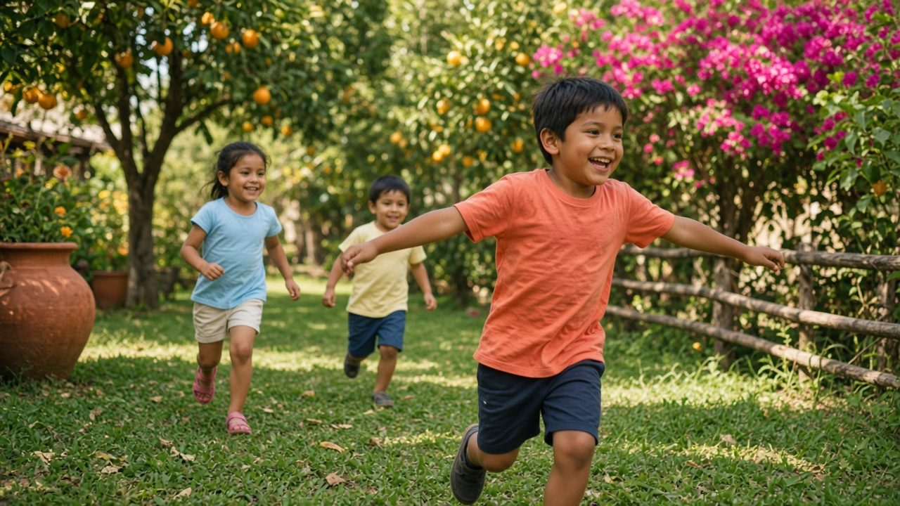
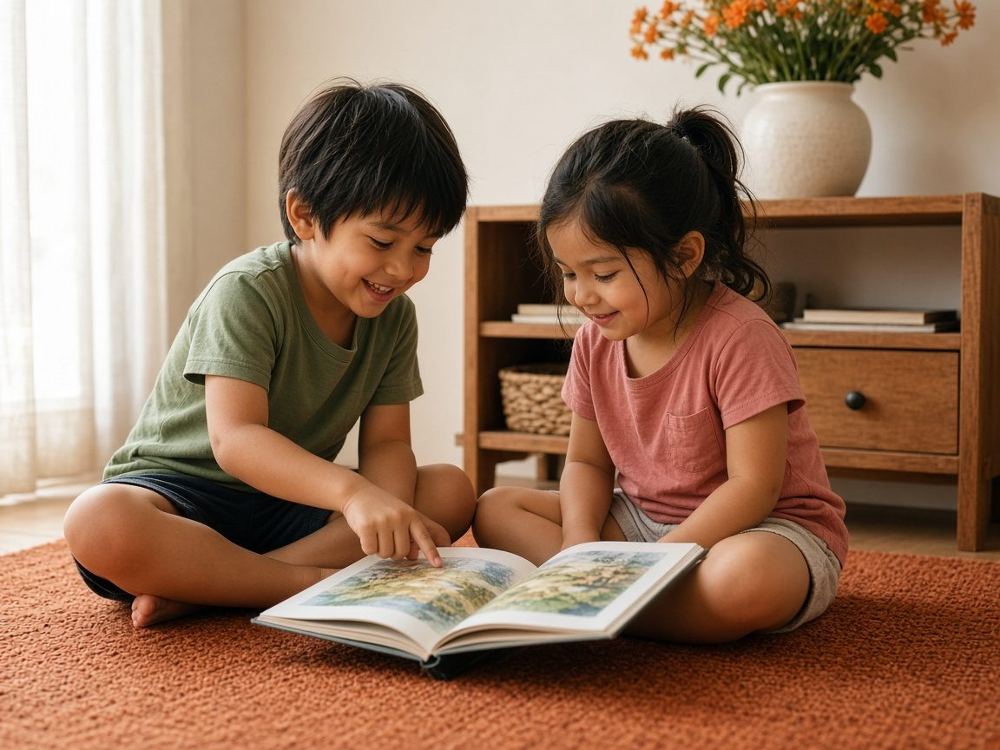
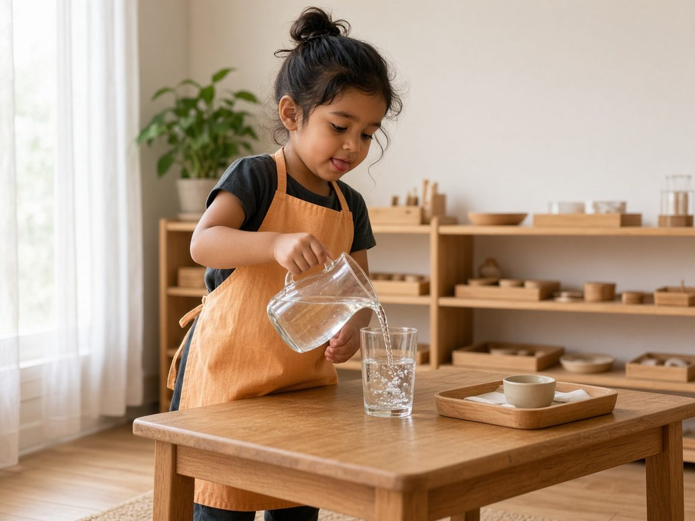
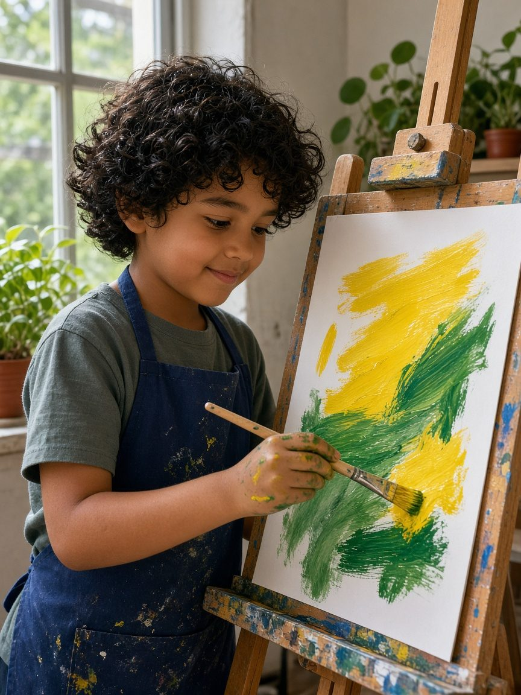
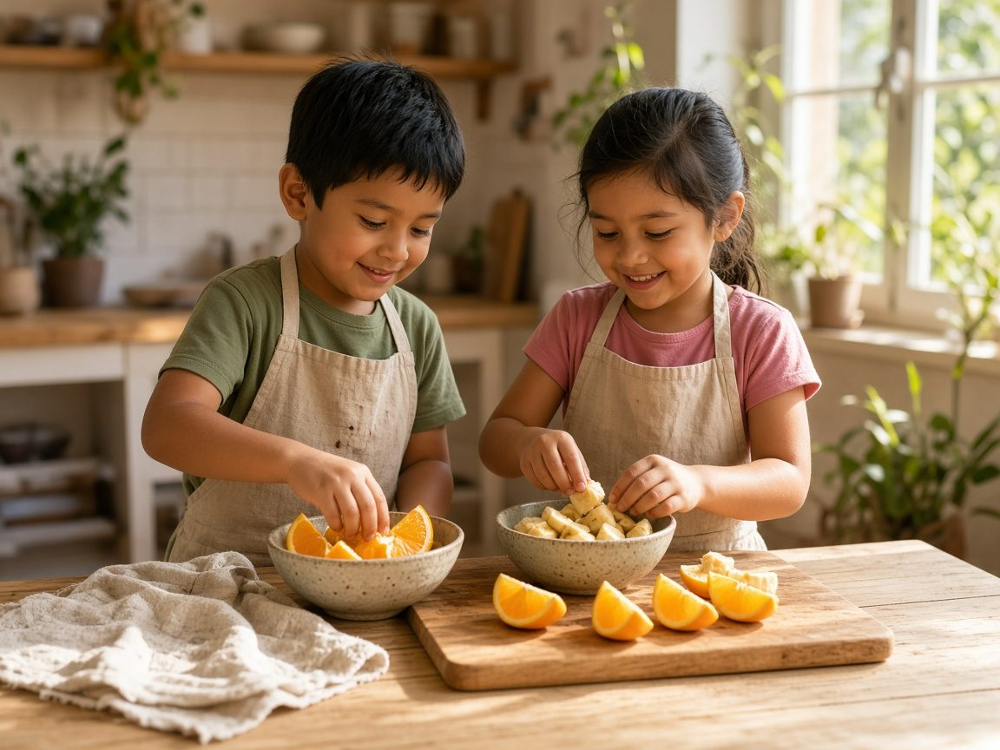
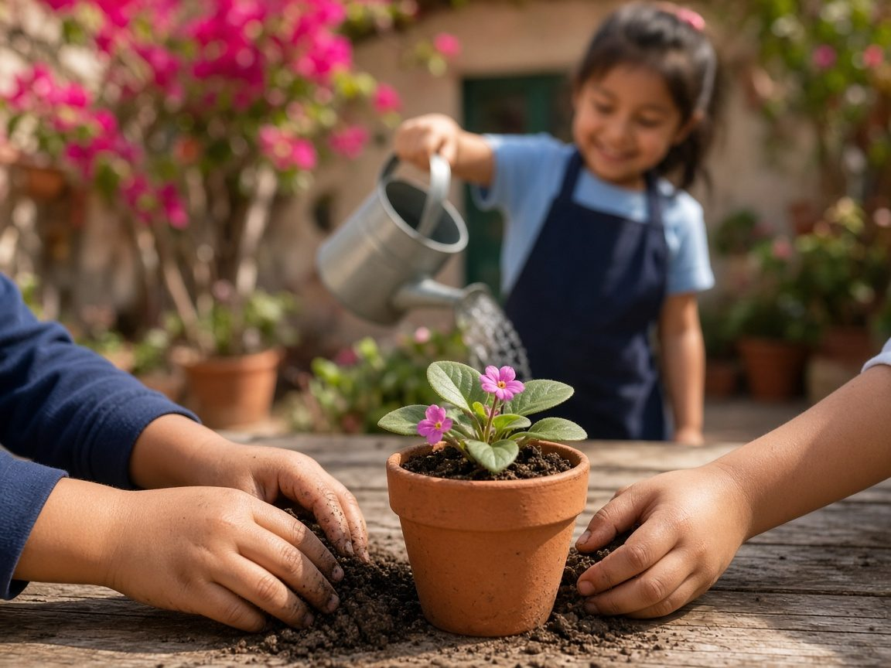

Nombre de la escuela
Vengan a ver el trabajo.
Los niños eligen el material, cuidan el ambiente y salen al jardín. Con una mañana de visita se entiende.
Agendar visita
Así se mueve una mañana.
Cuatro momentos de un ambiente Montessori. El horario real de esta escuela se anota cuando lo confirmen.
-

Eligen por dónde empezar. 1.0Llegan
Saludan y escogen el primer trabajo. No hay una fila esperándolos en la puerta.
-

Verter, repetir, devolver el material. 2.0Trabajan
El ciclo es largo a propósito. Hay tiempo de concentrarse, equivocarse y volver a empezar.
-

Pintar también es trabajo.
El caballete está a su altura. El delantal se mancha. Eso entra en la mañana, no es un extra del viernes.
-

La comida se prepara, no solo se sirve. 3.0Comen
Ponen la mesa, parten la fruta y lavan lo que usaron. La cocina es otro trabajo, con las manos.
-

Regar, correr, volver. 4.0Salen
El jardín también es ambiente. Se riega, se corre, y se regresa cuando el cuerpo ya se movió.
Lo que falta confirmar.
Estos renglones no son datos de la escuela. Están vacíos a propósito, para no inventar horario, edades ni dirección.
- Ciudad
- Ciudad, México
- Edades
- Por confirmar
- Horario
- Por confirmar
- Guías
- Por confirmar
- Teléfono
- Por confirmar
- Correo
- Por confirmar
Pida la visita.
Una mañana en el ambiente dice más que esta página. Deje su nombre y un teléfono.